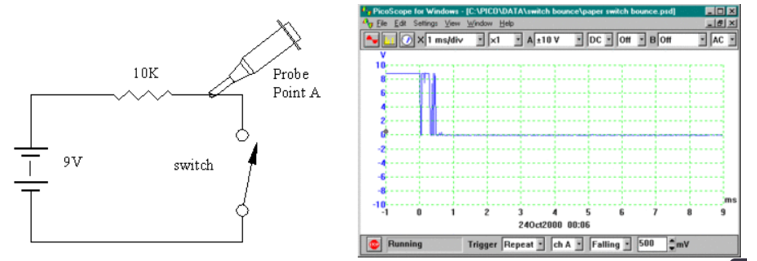
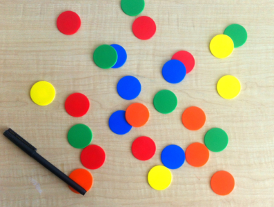

What is the bouncing effect found in mechanical button/switches?

Measure bouncing interval of a switch
The bouncing effect is a problem found in mechanical buttons and switches.
When we press a button or close the switch, the metal parts inside the button/switch have to move to a place where it contacts and closes the circuit.
Because the metal parts have the elastic property[2], so they will bounce off the floor several times before it comes to rest.
This is similar to a basketball when its dropped on the ground
What are impacts of bouncing effect in digital applications and embedded systems
Because it takes milliseconds for the metal parts to settle down to the floor and close the circuit, but the microcontroller can read inputs in microseconds, so it creates button glitches that will send multiple inputs upon a single press.
This would cause logic issues in the real-world embedded systems
How people measure such effect?
We can create a simple circuit consisting of a battery, a resistor, a switch, then use an oscilloscope to measure the voltage when the switch is closed.
How to make simple color recognition program

Example image
Analysis
determine the color of a certain pixel by its RGB value which stands for Red-Green-Blue, a 3 primary colors system for displaying digital color images
After that, we have to store it some where in a suitable format for easy manipulation.
With this problem, we have to work with the RGB value of pixels. Each pixel has 3 values of Red, Green and Blue from 0 to 255.
A combination of these values create different colors like black (R=0, G=0, B=0) or white (R=255, G=255, B=255)
Apply principle
We will make a program to change the color we want to black
In order to change a specific color to another color (black), we have to determine its RGB value and save it in an easy-to-manipulate format.
We can do this by saving the image information into a 3 dimensional array where the x and y coordinates represent the position of the pixel while the z value is the RGB value of that certain pixel.
Algorithms
We first compare the pixel RGB values to the color we want to change.
For example, we want to change the color blue to black.
We compare each pixel RGB value to determine if that pixel is blue or not. If the pixel is blue, we change its RGB value to 0 to make it black.